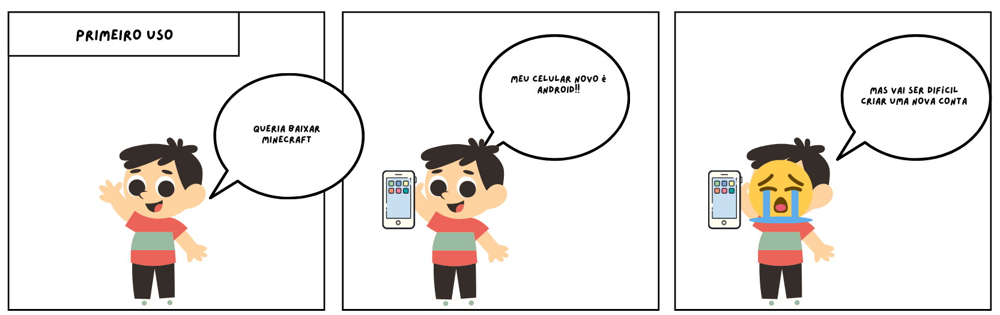

Fluxo de usuário
Esta seção é destinada para a elicitação dos requisitos relacionados à fluxo de usuários de Apps da Play Store, esta categoria foi definida na secção Home.
Introspecção
O artefato está definido em introspecção
A técnica de elicitação de requisitos conhecida como introspecção é um método reflexivo e autônomo utilizado por analistas de sistemas para identificar e definir os requisitos de um projeto. Baseando-se em sua própria experiência, conhecimento prévio e intuição, o analista realiza uma auto-reflexão profunda para imaginar como o sistema deve funcionar, considerando diversos cenários de uso, possíveis problemas e soluções.
Resultados da técnica
Funcionalidades Gerais
- Logar
- Criar conta do Gmail
- Autenficar usuários
- Alterar e recuperar senha
- Gerenciar as contas na Play Store -Trocar de conta -Remover conta
Detalhes do Usuário
- Mostrar informações do usário
- Nome
- Gmail Logado
- Foto do Gmail
- Ferramentas google associadas
- Aplicativos, filmes e livros instaldos
- Dispositivos logados
- Formas de pagamento cadastradas
Configurações personalizadas
- Notificações
- No aplicativo
- No gmail
- Acessibilidade
- Cor
- Atalhos de teclado
- Leitor de telas
- Contraste
- Preferências
- Atualizações automáticas
- Abrir vídeos automaticamente
- Preferências de Dowload
- Configurações de segurança
Notificações
- Notificar usuário pelo Gmail logado
Requisitos Identificados
Após a aplicação das técnicas de Introspecção, foi possível identificar algumas necessidades e requisitos da Play Store:
- O aplicativo deve ser capaz criar um usuário.
- O aplicativo deve permitir o login de um usuário.
- O aplicativo deve autenticar a senha ao fazer login.
- O aplicativo deve fornecer acesso à funcionalidade aletrar e recuperar a senha.
- O aplicativo deve permitir a saída de um usuário.
- O aplicativo deve permitir a troca da conta principal utilizada no dispositivo.
- O aplicativo deve permitir o gerenciamento de dispositivos.
- O aplicativo deve permitir o gerenciamento de aplicativos, livros e filmes do usuário.
- O aplicativo deve manter salvas as formas de pagamento do usuário.
- O aplicativo deve notificar o usuário.
- O aplicativo deve permitir configurações de acessibilidade associadas ao usuário.
- O aplicativo deve permitir configurações de preferências associadas ao usuário.
- O aplicativo deve permitir configurações de segurança associadas ao usuário.
Observação
O artefato está definido em observação
Participativa
O artefato está definido em observação
Planejamento:
Foi definido o objetivo de verificar as opções de entrada e sáida de um usuário na Play Store, e as opções fornecidas.
Aplicação:
Para esta categoria, utilizamos o aplicativo da Play Store, que já vem instalado em dispositivos Android. Um membro da equipe utilizava o aplicativo enquanto outro observava e sugeria opções de interação. Esse método permitiu captar de forma mais precisa as dificuldades e necessidades dos usuários durante o uso do aplicativo.
- Foi observado a criação de uma conta;
- Foi observado o login com uma conta Google já criada;
- Foi observado a remoção da conta logado;
- Foi sugerido a interação com o esqueci a senha;
- Foi Observado as opções de possivel acesso de um usuário após login.
Passiva
O artefato está definido em observação
Planejamento:
Foi definido o objetivo de verificar as opções de entrada e sáida de um usuário na Play Store, e as opções fornecidas.
Aplicação:
Para esta categoria, utilizamos a plataforma Web da Play Store, em um Notebook da DELL com o sistema operacional Linux. Um membro da equipe utilizava o aplicativo enquanto outro observava. Esse método permitiu captar de forma mais precisa as dificuldades e necessidades dos usuários durante o uso do aplicativo.
- Foi observado o login com uma conta Google já criada;
- Foi observado a criação de uma conta;
- Foi observado logar com conta nova
- Foi observado os dispositivos vínculados ao usuário;
- Foi observado a interação com o esqueci a senha;
- Foi observada a alteração da senha;
- Foi observado a saída do usuário logado;
- Foi observado a troca de conta;
- Foi Observado as opções de possivel acesso de um usuário após login.
Requisitos Identificados
Após a aplicação das técnicas de observação passiva e participativa, foi possível identificar algumas necessidades e requisitos da Play Store:
- O aplicativo deve ser capaz de fornecer a criação de uma conta Gmail (Google Email).
- O aplicativo deve permitir o login com uma conta Google já existente.
- O aplicativo deve autenticar a senha ao fazer login com uma conta.
- O aplicativo deve fornecer acesso à funcionalidade "esqueci a senha" do Gmail.
- O aplicativo deve permitir a remoção de contas logadas.
- O aplicativo deve permitir a troca da conta principal utilizada no dispositivo.
- O aplicativo deve permitir o gerenciamento de dispositivos vinculados ao Gmail.
- O aplicativo deve permitir o gerenciamento de aplicativos, livros e filmes vinculados ao Gmail.
- O aplicativo deve controlar o histórico de comentários e avaliações feitos pelo Gmail.
- O aplicativo deve manter salvas as formas de pagamento da conta.
- O aplicativo deve permitir configurações personalizadas para cada conta.
- O aplicativo deve notificar o usuário tanto no próprio app quanto via Gmail.
- O aplicativo deve gerenciar os benefícios e ferramentas disponíveis para a Play Store vinculadas ao Gmail.
- O aplicativo deve permitir que o usuário contate o suporte.
Vídeo da aplicação da observação participativa para fluxo de usuário - 29/07/2024
Vídeo da aplicação da observação passiva para fluxo de usuário - 29/07/2024
Storytelling
O artefato está definido em storytelling
Storytelling na elicitação de requisitos é uma técnica que utiliza narrativas para capturar e comunicar os requisitos de um sistema de forma mais clara e envolvente. Em vez de apenas listar especificações técnicas, o storytelling incorpora histórias e cenários que ilustram como o sistema será usado na prática. Isso ajuda a criar um entendimento mais profundo e compartilhado entre as partes interessadas, como desenvolvedores, clientes e usuários finais.
Primeiro uso
Conta a narrativa de um menino que quer jogar e deseja facilidade na hora de logar na Play Store e comprar Minecraft.

Autores: Carlos Alves & Larissa Vieira
É possível fazer login rapidamente se já tiver uma conta Google e ter as formas de pagamento salvas nesta conta. Isso torna a utilização de um celular novo mais rápida, além de permitir o backup das compras e aplicativos instalados em dispositivos anteriores.
Requisitos Identificados
Após a aplicação das técnicas de Storytelling, foi possível identificar algumas necessidades e requisitos da Play Store:
- O aplicativo deve permitir a mudança de dispositivos de forma fácil, oferecendo backup e reinstalação de aplicativos, filmes e livros de uma conta Gmail.
- O aplicativo deve permitir fazer login utilizando uma conta Google já criada.
- O aplicativo deve salvar as formas de pagamento cadastradas.
Requisitos elicitados para Fluxo de usuário
Após a análise das técnicas e artefatos gerados neste secção, elicitamos os seguintes requisitos.
| Código | Descrição | Técnica de elicitação |
|---|---|---|
| REQ01 | O aplicativo deve ser capaz de fornecer a criação de uma conta Gmail (Google Email). | Introspecção e Observação |
| REQ02 | O aplicativo deve permitir o login com uma conta Google já existente. | Introspecção, Observação e Storytelling |
| REQ03 | O aplicativo deve autenticar a senha ao fazer login com uma conta. | Introspecção e Observação |
| REQ04 | O aplicativo deve fornecer acesso à funcionalidade "esqueci a senha" do Gmail. | Introspecção e Observação |
| REQ05 | O aplicativo deve permitir a remoção de contas logadas. | Introspecção e Observação |
| REQ06 | O aplicativo deve permitir a troca da conta principal utilizada no dispositivo. | Introspecção e Observação |
| REQ07 | O aplicativo deve permitir o gerenciamento de dispositivos vinculados ao Gmail. | Introspecção e Observação |
| REQ08 | O aplicativo deve permitir o gerenciamento de aplicativos, livros e filmes vinculados ao Gmail. | Introspecção e Observação |
| REQ09 | O aplicativo deve controlar o histórico de comentários e avaliações feitos pelo Gmail. | Introspecção e Observação |
| REQ10 | O aplicativo deve manter salvas as formas de pagamento da conta. | Introspecção, Observação e Storytelling |
| REQ11 | O aplicativo deve permitir configurações personalizadas para cada conta. | Introspecção e Observação |
| REQ12 | O aplicativo deve notificar o usuário tanto no próprio app quanto via Gmail. | Introspecção e Observação |
| REQ13 | O aplicativo deve gerenciar os benefícios e ferramentas disponíveis para a Play Store vinculadas ao Gmail. | Introspecção e Observação |
| REQ14 | O aplicativo deve permitir que o usuário contate o suporte. | Introspecção e Observação |
| REQ15 | O aplicativo deve permitir configurações de acessibilidade associadas ao usuário. | Introspecção |
| REQ16 | O aplicativo deve permitir configurações de preferências associadas ao usuário. | Introspecção |
| REQ17 | O aplicativo deve permitir configurações de segurança associadas ao usuário. | Introspecção |
| REQ18 | O aplicativo deve permitir a mudança de dispositivos de forma fácil, oferecendo backup e reinstalação de aplicativos, filmes e livros de uma conta Gmail. | Storytelling |
Histórico de Versões
| Versão | Data | Alterações Principais | Autor |
|---|---|---|---|
| 1.0.0 | 29-07-2024 | Lançamento inicial da documentação. | Carlos Alves, Larissa Vieira |
| 1.0.1 | 29-07-2024 | Adicionando técnica de Introspecção | Carlos Alves, Larissa Vieira |
| 1.0.2 | 29-07-2024 | Adicionando técnica de Observação | Carlos Alves, Larissa Vieira |
| 1.0.3 | 29-07-2024 | Adicionando técnica de Storytelling | Carlos Alves, Larissa Vieira |
| 1.0.4 | 29-07-2024 | Concretizando Requisitos de Fluxo de usuário | Carlos Alves, Larissa Vieira |